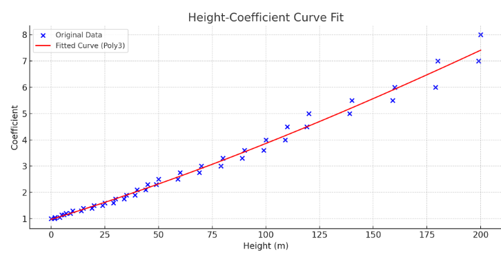

構造物に作用する風圧力は、高さによって大きく変化します。従来は高さごとの「高さ係数（風力係数）」をテーブルで管理していましたが、これは煩雑で、精度・滑らかさにも限界がありました。ここでは、3次多項式を用いた連続的なモデル化によって、風圧評価の合理化を図ります。
風圧力は以下のように定義されます：
P = 0.6 × V² × Czこのうち、Czが風圧力の高さ依存性を支配します。
高さごとの係数表に基づき、間を線形補間してCzを求める方法が一般的でした：
係数Czを次のような3次多項式で表現：
Cz(h) = a + b·h + c·h² + d·h³この式により、任意の高さに対して直接Czを評価できます。
| 高さ (m) | 係数Cz |
|---|---|
| 0 | 1.00 |
| 10 | 1.34 |
| 30 | 2.04 |
| 60 | 3.24 |
| 100 | 5.26 |
| 150 | 7.16 |
| 200 | 8.00 |
このCz(h)をP = 0.6 × V² × Cz(h) に代入すれば、任意高さでの風圧力が即時に計算可能です。
これにより、設計時の風荷重評価や部材選定がより正確かつ柔軟に行えるようになります。
実務では、設計対象の高さより高めの係数を適用することで、安全マージンを取ることが一般的です：
風速と風圧力は、構造物が建つ地形・地表環境に大きく左右されます。これを地表面粗度区分により分類・補正します。
| 区分 | 概要 | 粗度係数α（例） |
|---|---|---|
| I | 海上・湖上・空港など障害物なし | 0.12 |
| II | 農村・郊外・低密度市街地 | 0.16 |
| III | 中密度の都市環境 | 0.22 |
| IV | 高密度ビル街 | 0.30 |
風速V(h)は以下のように修正されます：
V(h) = Vref × (h / href)^αこの補正を施した風速を用いてP = 0.6 × V(h)² × Czを計算すれば、より現実的な風圧が得られます。
建築物は、風だけでなく地震荷重（水平力）
通常、地震と風の同時作用は考慮しないが、構造物の形状・用途・立地条件によっては個別検討が推奨されます。 風は常に一定方向から吹くわけではなく、風向頻度によって評価方向を選定する必要があります。地域ごとに風配図（風向頻度）を用いて最も影響の大きい方向に対する風荷重を設定します。
風向係数Cdは、以下のような値で設定されます： 建築物の形状により、受ける風圧の大きさや分布は変わります。これを補正するために形状係数Cf（または圧力係数Cp）を用います。
建築基準法施行令別表または日本建築学会「建築物の荷重指針」などに詳細な係数が掲載されています。 風荷重の多くは静的に扱われますが、高層建築物や柔構造では動的応答（風による振動）が重要になります。 これを評価するための応答係数R（Response Factor）は次のように定義されます： 特に以下の場合は動的影響を無視できません： 動的解析（スペクトル解析・風洞試験・CFD解析）などが必要になることもあります。 以上の要素を踏まえることで、風荷重に対して安全かつ合理的な設計が可能となります。組み合わせ例（許容応力度設計）
1.0 × 死荷重 + 1.0 × 活荷重 + 1.0 × 地震荷重
1.0 × 死荷重 + 1.0 × 活荷重 + 1.0 × 風荷重
組み合わせ例（限界状態設計）
1.2D + 1.0L + 1.0W（風）
1.2D + 1.0L + 1.0E（地震）
0.9D + 1.0W（風 uplift）など
9. 実務的示唆
10. 風向係数（風向の分布）
11. 建物形状係数（風力係数）
形状
風上面のCf
風下面のCf
平屋箱形（長方体）
+0.8
−0.5〜−0.7
高層建築物
+0.8
−0.3
円筒形・ドーム
+0.6
−0.4
12. 応答係数（動的補正）
Ptotal = Pmean × R
13. 設計における注意事項とベストプラクティス
14. 参考文献・資料